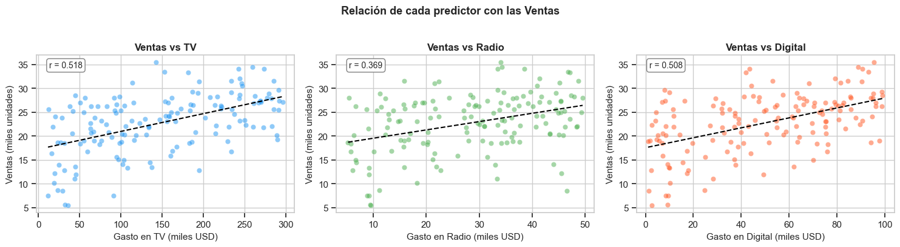
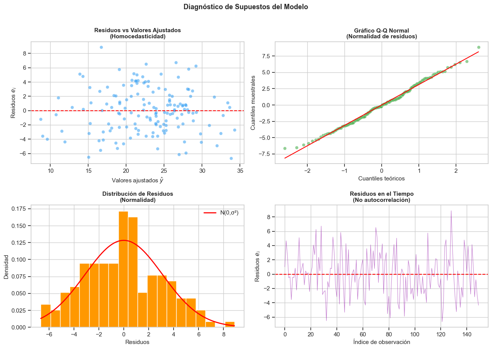
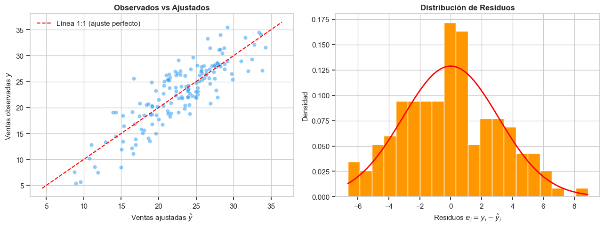
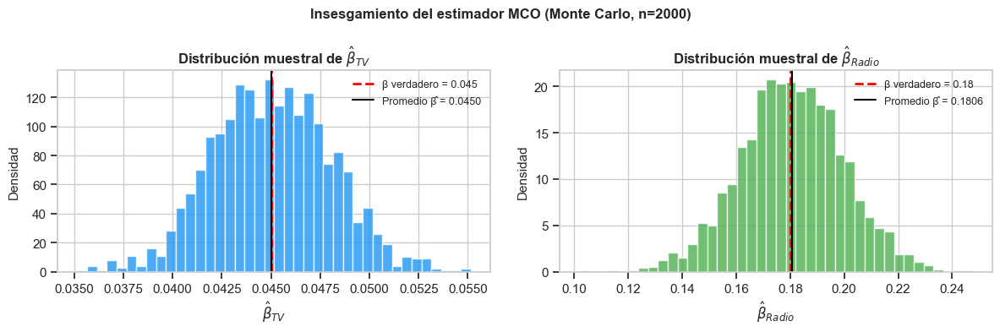
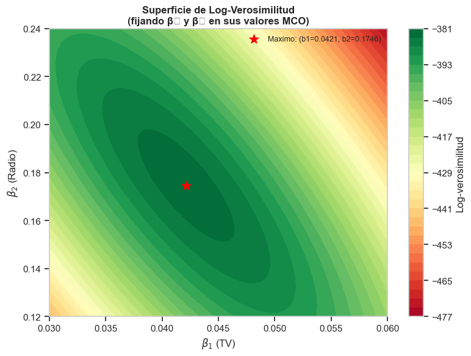
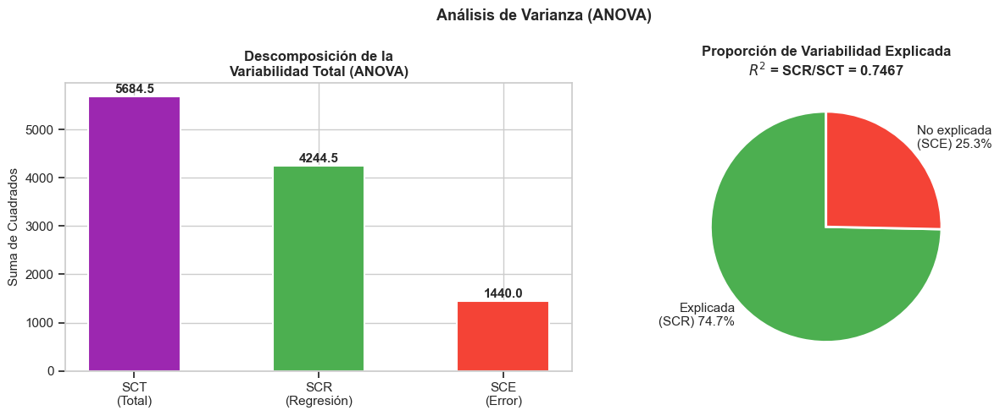
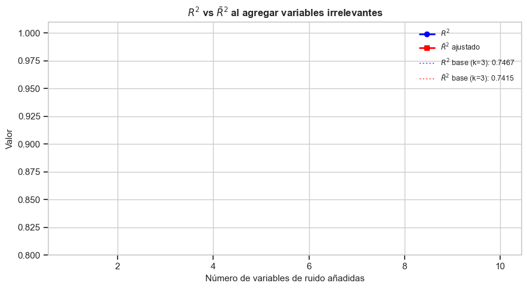
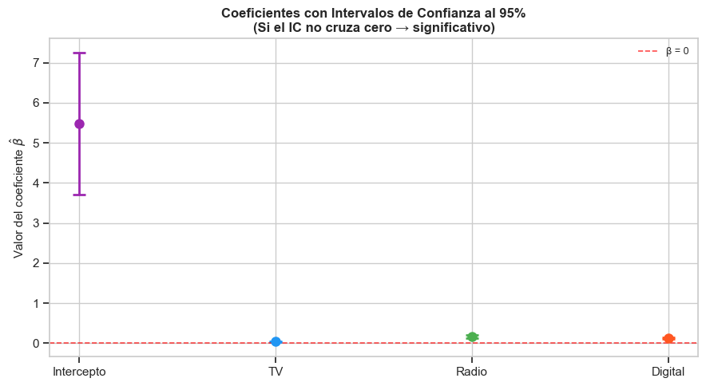
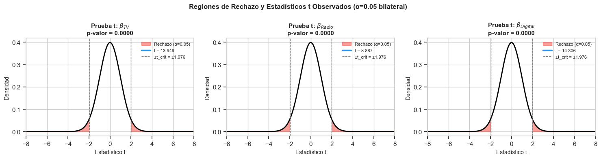

Regresión Lineal Múltiple#
La regresión lineal múltiple (RLM) es una de las herramientas más fundamentales en estadística aplicada y econometría. Permite modelar la relación entre una variable dependiente cuantitativa y dos o más variables independientes, capturando el efecto parcial de cada predictor manteniendo los demás constantes.
Objetivos#
Formular el modelo de regresión lineal múltiple en notación vectorial y matricial.
Comprender los supuestos de Gauss-Markov que garantizan las propiedades del estimador.
Derivar el estimador de mínimos cuadrados ordinarios (MCO) algebraicamente.
Demostrar las propiedades del estimador MCO (MELI / BLUE).
Obtener el estimador de máxima verosimilitud y su relación con MCO.
Construir e interpretar la tabla ANOVA de la regresión.
Medir la bondad de ajuste con \(R^2\) y \(R^2\) ajustado.
Realizar e interpretar pruebas de hipótesis sobre los coeficientes.
Ejemplo motivador: Una empresa de consumo masivo quiere saber cómo el gasto en publicidad en televisión, radio y medios digitales impacta sus ventas semanales. ¿Cuánto aporta cada canal? ¿El modelo en su conjunto es útil?
[1]:
import numpy as np
import pandas as pd
import matplotlib.pyplot as plt
import matplotlib.gridspec as gridspec
import seaborn as sns
import statsmodels.api as sm
import statsmodels.formula.api as smf
from statsmodels.stats.outliers_influence import variance_inflation_factor
from scipy import stats
from sklearn.linear_model import LinearRegression
from sklearn.metrics import r2_score, mean_squared_error
np.random.seed(42)
plt.style.use('seaborn-v0_8-whitegrid')
sns.set_context('notebook')
pd.set_option('display.float_format', '{:.4f}'.format)
[ ]:
# ─── Generación del dataset de ejemplo ───────────────────────────────────────
# Empresa de consumo masivo: gasto semanal (miles USD) en tres canales
# Ventas semanales (miles de unidades)
n = 150
TV = np.random.uniform(10, 300, n) # gasto en TV
Radio = np.random.uniform(5, 50, n) # gasto en radio
Digital = np.random.uniform(0, 100, n) # gasto en medios digitales
epsilon = np.random.normal(0, 3, n) # error aleatorio
# Modelo poblacional verdadero: Ventas = 5 + 0.045*TV + 0.18*Radio + 0.12*Digital + ε
Ventas = 5 + 0.045*TV + 0.18*Radio + 0.12*Digital + epsilon
df = pd.DataFrame({
'TV': TV,
'Radio': Radio,
'Digital': Digital,
'Ventas': Ventas
})
print(f"Dimensiones del dataset: {df.shape}")
df.head(8)
Dimensiones del dataset: (150, 4)
| TV | Radio | Digital | Ventas | |
|---|---|---|---|---|
| 0 | 118.6166 | 45.8720 | 5.1682 | 20.1476 |
| 1 | 285.7071 | 15.7803 | 53.1355 | 31.4996 |
| 2 | 222.2782 | 11.5203 | 54.0635 | 26.1368 |
| 3 | 183.6110 | 27.0254 | 63.7430 | 25.2964 |
| 4 | 55.2454 | 49.3543 | 72.6091 | 25.0259 |
| 5 | 55.2384 | 15.8925 | 97.5852 | 19.0490 |
| 6 | 26.8442 | 35.2461 | 51.6300 | 18.6924 |
| 7 | 261.1911 | 39.2729 | 32.2956 | 26.8322 |
[3]:
# Estadísticas descriptivas
df.describe().T
[3]:
| count | mean | std | min | 25% | 50% | 75% | max | |
|---|---|---|---|---|---|---|---|---|
| TV | 150.0000 | 147.1373 | 85.9939 | 11.6014 | 72.2866 | 139.9523 | 227.4019 | 296.1972 |
| Radio | 150.0000 | 28.2885 | 13.1135 | 5.2278 | 16.1365 | 30.0200 | 39.1027 | 49.5524 |
| Digital | 150.0000 | 49.6152 | 30.1338 | 1.0838 | 24.8359 | 50.4194 | 75.3127 | 99.0505 |
| Ventas | 150.0000 | 22.7364 | 6.1766 | 5.4420 | 19.0357 | 23.5500 | 27.0053 | 35.4455 |
[4]:
# Visualización de relaciones bivariadas
fig, axes = plt.subplots(1, 3, figsize=(15, 4))
variables = ['TV', 'Radio', 'Digital']
colores = ['#2196F3', '#4CAF50', '#FF5722']
for ax, var, col in zip(axes, variables, colores):
ax.scatter(df[var], df['Ventas'], alpha=0.5, color=col, edgecolors='white', linewidths=0.3)
m, b = np.polyfit(df[var], df['Ventas'], 1)
x_line = np.linspace(df[var].min(), df[var].max(), 100)
ax.plot(x_line, m*x_line + b, color='black', linewidth=1.5, linestyle='--')
ax.set_xlabel(f'Gasto en {var} (miles USD)', fontsize=11)
ax.set_ylabel('Ventas (miles unidades)', fontsize=11)
ax.set_title(f'Ventas vs {var}', fontsize=12, fontweight='bold')
r = np.corrcoef(df[var], df['Ventas'])[0, 1]
ax.text(0.05, 0.92, f'r = {r:.3f}', transform=ax.transAxes, fontsize=10,
bbox=dict(boxstyle='round,pad=0.3', facecolor='white', edgecolor='gray'))
plt.suptitle('Relación de cada predictor con las Ventas', fontsize=13, fontweight='bold', y=1.02)
plt.tight_layout()
plt.show()

1. El Modelo de Regresión Lineal Múltiple#
1.1. Especificación escalar#
El modelo de regresión lineal múltiple relaciona una variable dependiente \(y\) con \(k\) variables independientes \(x_1, x_2, \ldots, x_k\) mediante:
donde:
\(y_i\): valor observado de la variable dependiente para la observación \(i\).
\(x_{ij}\): valor del \(j\)-ésimo regresor para la observación \(i\).
\(\beta_0\): intercepto (valor esperado de \(y\) cuando todas las \(x_j = 0\)).
\(\beta_j\): efecto parcial de \(x_j\) sobre \(y\), manteniendo los demás regresores constantes (ceteris paribus).
\(\varepsilon_i\): término de error aleatorio no observable.
1.2. Notación matricial#
Para \(n\) observaciones y \(k\) predictores, el modelo completo se escribe en forma compacta como:
donde:
La columna de unos en \(\mathbf{X}\) corresponde al intercepto \(\beta_0\).
1.3. Interpretación de los coeficientes#
:math:`beta_j` mide el cambio promedio esperado en :math:`y` ante un aumento unitario de :math:`x_j`, manteniendo constantes el resto de las variables.
En nuestro ejemplo de publicidad:
\(\hat{\beta}_{\text{TV}} = 0.045\): cada mil USD adicionales en TV se asocian con 45 unidades más de ventas, dado el gasto en Radio y Digital.
\(\hat{\beta}_{\text{Radio}} = 0.18\): mayor retorno marginal por unidad invertida.
\(\hat{\beta}_{\text{Digital}} = 0.12\): efecto intermedio.
[5]:
# ─── Construcción explícita de la matriz de diseño X ────────────────────────
X_cols = ['TV', 'Radio', 'Digital']
# Agregar columna de unos para el intercepto
X_matrix = np.column_stack([np.ones(n), df[X_cols].values])
y_vector = df['Ventas'].values
print("Forma de la matriz de diseño X:", X_matrix.shape) # (150, 4)
print("Forma del vector y: ", y_vector.shape) # (150,)
print()
print("Primeras 5 filas de X:")
print(pd.DataFrame(X_matrix[:5], columns=['Intercepto', 'TV', 'Radio', 'Digital']).to_string(index=False))
Forma de la matriz de diseño X: (150, 4)
Forma del vector y: (150,)
Primeras 5 filas de X:
Intercepto TV Radio Digital
1.0000 118.6166 45.8720 5.1682
1.0000 285.7071 15.7803 53.1355
1.0000 222.2782 11.5203 54.0635
1.0000 183.6110 27.0254 63.7430
1.0000 55.2454 49.3543 72.6091
2. Supuestos del Modelo#
Los supuestos clásicos (conocidos como condiciones de Gauss-Markov) son las condiciones bajo las cuales el estimador MCO es el mejor estimador lineal insesgado.
Supuesto 1: Linealidad en los parámetros#
El modelo es lineal en los parámetros \(\boldsymbol{\beta}\) (no necesariamente lineal en las variables \(x\)):
Esto permite transformaciones como \(\log(x)\), \(x^2\), interacciones \(x_1 \cdot x_2\), etc.
Supuesto 2: Muestra aleatoria (exogeneidad estricta)#
El error esperado es cero para cualquier valor de los regresores. Implica que ninguna variable relevante fue omitida y que no hay sesgo de selección.
Supuesto 3: No multicolinealidad perfecta#
La matriz \(\mathbf{X}\) tiene rango completo: \(\text{rk}(\mathbf{X}) = k + 1\).
Esto garantiza que \((\mathbf{X}^T\mathbf{X})^{-1}\) existe y los coeficientes son identificables. La multicolinealidad imperfecta infla las varianzas.
Supuesto 4: Homocedasticidad#
La varianza del error es constante. Su violación (heterocedasticidad) no introduce sesgo pero sí invalida los errores estándar estándar.
Supuesto 5: No autocorrelación#
Los errores de distintas observaciones no están correlacionados entre sí. Frecuentemente violado en datos de series de tiempo.
Supuesto 6: Normalidad de los errores (para inferencia)#
Necesario para que las estadísticas \(t\) y \(F\) sigan sus distribuciones exactas en muestras pequeñas. En muestras grandes el TCL lo garantiza de forma asintótica.
Los supuestos 1-5 son suficientes para demostrar que el estimador MCO es MELI (Mejor Estimador Lineal Insesgado). El supuesto 6 es adicional para la inferencia exacta.
[6]:
# ─── Verificación visual de supuestos (con el modelo ajustado previamente) ──
# Ajustamos el modelo con statsmodels para obtener residuos
X_sm = sm.add_constant(df[['TV', 'Radio', 'Digital']])
model = sm.OLS(df['Ventas'], X_sm).fit()
residuos = model.resid
ajustados = model.fittedvalues
fig, axes = plt.subplots(2, 2, figsize=(13, 9))
# 1. Residuos vs Ajustados (homocedasticidad)
axes[0, 0].scatter(ajustados, residuos, alpha=0.5, color='#2196F3', edgecolors='white', linewidths=0.3)
axes[0, 0].axhline(0, color='red', linewidth=1.5, linestyle='--')
axes[0, 0].set_xlabel('Valores ajustados $\\hat{y}$', fontsize=11)
axes[0, 0].set_ylabel('Residuos $e_i$', fontsize=11)
axes[0, 0].set_title('Residuos vs Valores Ajustados\n(Homocedasticidad)', fontsize=11, fontweight='bold')
# 2. Q-Q plot (normalidad)
(osm, osr), (slope, intercept, r) = stats.probplot(residuos)
axes[0, 1].scatter(osm, osr, alpha=0.6, color='#4CAF50', edgecolors='white', linewidths=0.3)
x_line = np.array([osm[0], osm[-1]])
axes[0, 1].plot(x_line, slope * x_line + intercept, color='red', linewidth=1.5)
axes[0, 1].set_xlabel('Cuantiles teóricos', fontsize=11)
axes[0, 1].set_ylabel('Cuantiles muestrales', fontsize=11)
axes[0, 1].set_title('Gráfico Q-Q Normal\n(Normalidad de residuos)', fontsize=11, fontweight='bold')
# 3. Histograma de residuos
axes[1, 0].hist(residuos, bins=20, color='#FF9800', edgecolor='white', density=True)
xr = np.linspace(residuos.min(), residuos.max(), 200)
axes[1, 0].plot(xr, stats.norm.pdf(xr, 0, residuos.std()), 'r-', linewidth=2, label='N(0,σ²)')
axes[1, 0].set_xlabel('Residuos', fontsize=11)
axes[1, 0].set_ylabel('Densidad', fontsize=11)
axes[1, 0].set_title('Distribución de Residuos\n(Normalidad)', fontsize=11, fontweight='bold')
axes[1, 0].legend()
# 4. Residuos vs índice (autocorrelación)
axes[1, 1].plot(range(len(residuos)), residuos, alpha=0.6, color='#9C27B0', linewidth=0.8)
axes[1, 1].axhline(0, color='red', linewidth=1.5, linestyle='--')
axes[1, 1].set_xlabel('Índice de observación', fontsize=11)
axes[1, 1].set_ylabel('Residuos $e_i$', fontsize=11)
axes[1, 1].set_title('Residuos en el Tiempo\n(No autocorrelación)', fontsize=11, fontweight='bold')
plt.suptitle('Diagnóstico de Supuestos del Modelo', fontsize=13, fontweight='bold', y=1.01)
plt.tight_layout()
plt.show()
# Test de Shapiro-Wilk para normalidad
stat, p_sw = stats.shapiro(residuos)
print(f"Shapiro-Wilk: W = {stat:.4f}, p-valor = {p_sw:.4f}")
print("→ Residuos con distribución normal" if p_sw > 0.05 else "→ Evidencia contra normalidad")

Shapiro-Wilk: W = 0.9920, p-valor = 0.5605
→ Residuos con distribución normal
[7]:
# ─── Factor de Inflación de Varianza (VIF) — multicolinealidad ──────────────
X_vif = df[['TV', 'Radio', 'Digital']].copy()
X_vif = sm.add_constant(X_vif)
vif_data = pd.DataFrame({
'Variable': ['TV', 'Radio', 'Digital'],
'VIF': [variance_inflation_factor(X_vif.values, i+1) for i in range(3)]
})
print("Factor de Inflación de Varianza (VIF)")
print("VIF > 10 → multicolinealidad problemática")
print()
display(vif_data)
# Matriz de correlaciones
print("\nMatriz de correlaciones entre predictores:")
display(df[['TV', 'Radio', 'Digital']].corr().round(3))
Factor de Inflación de Varianza (VIF)
VIF > 10 → multicolinealidad problemática
| Variable | VIF | |
|---|---|---|
| 0 | TV | 1.0199 |
| 1 | Radio | 1.0023 |
| 2 | Digital | 1.0200 |
Matriz de correlaciones entre predictores:
| TV | Radio | Digital | |
|---|---|---|---|
| TV | 1.0000 | 0.0360 | -0.1360 |
| Radio | 0.0360 | 1.0000 | -0.0370 |
| Digital | -0.1360 | -0.0370 | 1.0000 |
3. Mínimos Cuadrados Ordinarios (MCO)#
3.1. Principio#
El estimador MCO minimiza la suma de cuadrados de los residuos (SCR):
donde \(e_i = y_i - \hat{y}_i\) son los residuos (diferencia entre observado y ajustado).
3.2. Derivación de las ecuaciones normales#
Expandiendo la función de costo:
Tomando la derivada con respecto a \(\boldsymbol{\beta}\) e igualando a cero:
Esto produce las ecuaciones normales:
3.3. Solución cerrada#
Si \(\mathbf{X}^T\mathbf{X}\) es invertible (rango completo, supuesto 3):
Los valores ajustados son:
donde \(\mathbf{H} = \mathbf{X}(\mathbf{X}^T\mathbf{X})^{-1}\mathbf{X}^T\) se llama matriz sombrero (hat matrix) o matriz de proyección. Es idempotente: \(\mathbf{H}^2 = \mathbf{H}\), \(\mathbf{H}^T = \mathbf{H}\).
3.4. Estimación de \(\sigma^2\)#
La varianza del error se estima de forma insesgada mediante:
donde \(n - k - 1\) son los grados de libertad del error (\(n\) datos menos \(k+1\) parámetros estimados).
[8]:
# ─── MCO desde cero: álgebra matricial pura ─────────────────────────────────
X = X_matrix # (150, 4) — incluye columna de unos
y = y_vector # (150,)
# Paso 1: X'X
XtX = X.T @ X
print("X'X (4×4):")
print(pd.DataFrame(XtX, columns=['const','TV','Radio','Digital'],
index=['const','TV','Radio','Digital']).round(2))
print()
X'X (4×4):
const TV Radio Digital
const 150.0000 22070.5900 4243.2700 7442.2900
TV 22070.5900 4349254.6900 630340.7600 1042368.8300
Radio 4243.2700 630340.7600 145658.5600 208365.8400
Digital 7442.2900 1042368.8300 208365.8400 504550.1500
[9]:
# Paso 2: (X'X)^{-1}
XtX_inv = np.linalg.inv(XtX)
# Paso 3: X'y
Xty = X.T @ y
# Paso 4: β̂ = (X'X)^{-1} X'y
beta_hat = XtX_inv @ Xty
print("Estimadores MCO (calculados a mano):")
nombres = ['Intercepto (β₀)', 'TV (β₁)', 'Radio (β₂)', 'Digital (β₃)']
for nombre, b in zip(nombres, beta_hat):
print(f" {nombre:<20} = {b:.6f}")
# Valores ajustados y residuos
y_hat = X @ beta_hat
e = y - y_hat
# Estimación de σ²
k = 3 # número de predictores (sin intercepto)
sigma2_hat = (e @ e) / (n - k - 1)
print(f"\nEstimación de σ²: {sigma2_hat:.4f}")
print(f"Estimación de σ: {np.sqrt(sigma2_hat):.4f} (error estándar de la regresión)")
Estimadores MCO (calculados a mano):
Intercepto (β₀) = 5.476007
TV (β₁) = 0.042149
Radio (β₂) = 0.174571
Digital (β₃) = 0.123358
Estimación de σ²: 9.8630
Estimación de σ: 3.1405 (error estándar de la regresión)
[10]:
# Comparación con statsmodels (verificación)
modelo_sm = sm.OLS(y, X).fit()
print("Verificación: coeficientes de statsmodels")
print(pd.Series(modelo_sm.params.round(6), index=['const','TV','Radio','Digital']).to_string())
print()
print("¿Coinciden con nuestra derivación manual?",
np.allclose(beta_hat, modelo_sm.params))
Verificación: coeficientes de statsmodels
const 5.4760
TV 0.0421
Radio 0.1746
Digital 0.1234
¿Coinciden con nuestra derivación manual? True
[11]:
# ─── Visualización: ajuste del modelo ────────────────────────────────────────
fig, axes = plt.subplots(1, 2, figsize=(13, 5))
# Observados vs Ajustados
axes[0].scatter(y_hat, y, alpha=0.5, color='#2196F3', edgecolors='white', linewidths=0.3)
lim = [min(y.min(), y_hat.min()) - 1, max(y.max(), y_hat.max()) + 1]
axes[0].plot(lim, lim, 'r--', linewidth=1.5, label='Línea 1:1 (ajuste perfecto)')
axes[0].set_xlabel('Ventas ajustadas $\\hat{y}$', fontsize=11)
axes[0].set_ylabel('Ventas observadas $y$', fontsize=11)
axes[0].set_title('Observados vs Ajustados', fontsize=12, fontweight='bold')
axes[0].legend()
# Distribución de residuos
axes[1].hist(e, bins=20, color='#FF9800', edgecolor='white', density=True)
xr = np.linspace(e.min(), e.max(), 200)
axes[1].plot(xr, stats.norm.pdf(xr, 0, e.std()), 'r-', linewidth=2)
axes[1].set_xlabel('Residuos $e_i = y_i - \\hat{y}_i$', fontsize=11)
axes[1].set_ylabel('Densidad', fontsize=11)
axes[1].set_title('Distribución de Residuos', fontsize=12, fontweight='bold')
plt.tight_layout()
plt.show()

4. Propiedades del Estimador MCO#
4.1. Insesgamiento#
Bajo los supuestos 1–3 (linealidad, exogeneidad, rango completo):
Demostración:
Tomando esperanza condicional en \(\mathbf{X}\):
4.2. Matriz de varianza-covarianza#
Bajo los supuestos 1–5:
La varianza de cada \(\hat{\beta}_j\) es el \(j\)-ésimo elemento diagonal, y la covarianza entre \(\hat{\beta}_j\) y \(\hat{\beta}_l\) es el elemento \((j,l)\). Los errores estándar son:
4.3. Teorema de Gauss-Markov (MELI / BLUE)#
Bajo los supuestos 1–5, el estimador MCO es el Mejor Estimador Lineal Insesgado (MELI), es decir, entre todos los estimadores lineales e insesgados de \(\boldsymbol{\beta}\), el MCO tiene la menor varianza.
MELI = BLUE (Best Linear Unbiased Estimator).
Esto significa que ningún otro estimador lineal e insesgado puede tener errores estándar más pequeños. Si adicionalmente se cumple el supuesto 6 (normalidad), entonces MCO es el estimador de mínima varianza entre todos los estimadores insesgados (no solo lineales).
4.4. Consistencia#
Con muestras grandes (\(n \to \infty\)), \(\hat{\boldsymbol{\beta}} \xrightarrow{p} \boldsymbol{\beta}\) bajo condiciones de regularidad estándar. El estimador es también asintóticamente normal:
donde \(\mathbf{Q} = \text{plim}\,\frac{1}{n}\mathbf{X}^T\mathbf{X}\).
[12]:
# ─── Matriz de varianza-covarianza de β̂ ────────────────────────────────────
Var_beta_hat = sigma2_hat * XtX_inv
print("Matriz de varianza-covarianza de β̂ (Var(β̂) = σ² (X'X)⁻¹):")
df_var = pd.DataFrame(Var_beta_hat,
columns=['const','TV','Radio','Digital'],
index=['const','TV','Radio','Digital'])
display(df_var.map(lambda v: f"{v:.6f}"))
# Errores estándar de los coeficientes
se_beta = np.sqrt(np.diag(Var_beta_hat))
print("\nErrores estándar de los coeficientes:")
for nombre, b, se in zip(nombres, beta_hat, se_beta):
print(f" {nombre:<20} β̂ = {b:.5f} SE = {se:.5f}")
Matriz de varianza-covarianza de β̂ (Var(β̂) = σ² (X'X)⁻¹):
| const | TV | Radio | Digital | |
|---|---|---|---|---|
| const | 0.806676 | -0.001466 | -0.010915 | -0.004362 |
| TV | -0.001466 | 0.000009 | -0.000002 | 0.000004 |
| Radio | -0.010915 | -0.000002 | 0.000386 | 0.000005 |
| Digital | -0.004362 | 0.000004 | 0.000005 | 0.000074 |
Errores estándar de los coeficientes:
Intercepto (β₀) β̂ = 5.47601 SE = 0.89815
TV (β₁) β̂ = 0.04215 SE = 0.00302
Radio (β₂) β̂ = 0.17457 SE = 0.01964
Digital (β₃) β̂ = 0.12336 SE = 0.00862
[13]:
# ─── Simulación Monte Carlo: verificar insesgamiento del estimador ──────────
# Repetimos la estimación con diferentes muestras y verificamos que el promedio
# de los estimadores converge a los verdaderos parámetros
beta_verdadero = np.array([5.0, 0.045, 0.18, 0.12])
n_sim = 2000
beta_mc = np.zeros((n_sim, 4))
for s in range(n_sim):
np.random.seed(s)
TV_s = np.random.uniform(10, 300, n)
Radio_s = np.random.uniform(5, 50, n)
Digital_s = np.random.uniform(0, 100, n)
eps_s = np.random.normal(0, 3, n)
y_s = 5 + 0.045*TV_s + 0.18*Radio_s + 0.12*Digital_s + eps_s
X_s = np.column_stack([np.ones(n), TV_s, Radio_s, Digital_s])
beta_mc[s] = np.linalg.solve(X_s.T @ X_s, X_s.T @ y_s)
print("Verificación de insesgamiento (simulación de Monte Carlo, 2000 réplicas):")
print(f"{'Parámetro':<15} {'β verdadero':>12} {'Promedio β̂':>12} {'Sesgo':>10}")
print("-" * 55)
for j, (bv, bprom) in enumerate(zip(beta_verdadero, beta_mc.mean(axis=0))):
sesgo = bprom - bv
print(f" β_{j} {nombres[j]:<10} {bv:>12.4f} {bprom:>12.4f} {sesgo:>10.6f}")
# Visualización de la distribución de β̂₁ (TV)
fig, axes = plt.subplots(1, 2, figsize=(12, 4))
for ax, j, col, nm in zip(axes, [1, 2], ['#2196F3', '#4CAF50'], ['TV', 'Radio']):
ax.hist(beta_mc[:, j], bins=40, density=True, color=col, edgecolor='white', alpha=0.8)
ax.axvline(beta_verdadero[j], color='red', linewidth=2, linestyle='--',
label=f'β verdadero = {beta_verdadero[j]}')
ax.axvline(beta_mc[:, j].mean(), color='black', linewidth=1.5, linestyle='-',
label=f'Promedio β̂ = {beta_mc[:,j].mean():.4f}')
ax.set_xlabel(f'$\\hat{{\\beta}}_{{{nm}}}$', fontsize=12)
ax.set_ylabel('Densidad', fontsize=11)
ax.set_title(f'Distribución muestral de $\\hat{{\\beta}}_{{{nm}}}$', fontsize=12, fontweight='bold')
ax.legend(fontsize=9)
plt.suptitle('Insesgamiento del estimador MCO (Monte Carlo, n=2000)', fontsize=12, fontweight='bold')
plt.tight_layout()
plt.show()
Verificación de insesgamiento (simulación de Monte Carlo, 2000 réplicas):
Parámetro β verdadero Promedio β̂ Sesgo
-------------------------------------------------------
β_0 Intercepto (β₀) 5.0000 4.9657 -0.034276
β_1 TV (β₁) 0.0450 0.0450 0.000037
β_2 Radio (β₂) 0.1800 0.1806 0.000554
β_3 Digital (β₃) 0.1200 0.1201 0.000133

5. Estimación de Máxima Verosimilitud (MV)#
5.1. Función de verosimilitud#
Bajo el supuesto 6 (\(\boldsymbol{\varepsilon} \sim \mathcal{N}(\mathbf{0}, \sigma^2\mathbf{I}_n)\)), cada \(y_i\) se distribuye de forma independiente:
La función de densidad conjunta (verosimilitud) es:
5.2. Log-verosimilitud#
Tomando logaritmo (la función es monótona creciente, así que el máximo es el mismo):
5.3. Estimadores MV#
Para :math:`boldsymbol{beta}`: Maximizar \(\ell\) respecto a \(\boldsymbol{\beta}\) equivale a minimizar \((\mathbf{y} - \mathbf{X}\boldsymbol{\beta})^T(\mathbf{y} - \mathbf{X}\boldsymbol{\beta})\), que es exactamente el problema de MCO. Por tanto:
Para :math:`sigma^2`: Derivando respecto a \(\sigma^2\) e igualando a cero:
5.4. Log-verosimilitud maximizada#
Sustituyendo los estimadores en \(\ell\):
Esta expresión se usa para construir criterios de información (AIC, BIC) y pruebas de razón de verosimilitud.
[14]:
# ─── Cálculo manual de la log-verosimilitud ─────────────────────────────────
sigma2_MV = (e @ e) / n # estimador MV (sesgado)
sigma2_MCO = (e @ e) / (n-k-1) # estimador MCO (insesgado)
# Log-verosimilitud maximizada
ll_max = (-n/2) * np.log(2 * np.pi) \
- (n/2) * np.log(sigma2_MV) \
- n/2
print("Estimadores de varianza:")
print(f" MV (sesgado, ÷ n): σ̂²_MV = {sigma2_MV:.4f}")
print(f" MCO (insesgado, ÷ n-k-1): σ̂²_MCO = {sigma2_MCO:.4f}")
print()
print(f"Log-verosimilitud maximizada: {ll_max:.4f}")
print(f"Verificación con statsmodels: {modelo_sm.llf:.4f}")
print()
print(f"AIC = -2·ℓ + 2·(k+2) = {modelo_sm.aic:.4f}")
print(f"BIC = -2·ℓ + (k+2)·ln(n) = {modelo_sm.bic:.4f}")
print("(k+2 = k predictores + intercepto + σ²)")
Estimadores de varianza:
MV (sesgado, ÷ n): σ̂²_MV = 9.6000
MCO (insesgado, ÷ n-k-1): σ̂²_MCO = 9.8630
Log-verosimilitud maximizada: -382.4729
Verificación con statsmodels: -382.4729
AIC = -2·ℓ + 2·(k+2) = 772.9458
BIC = -2·ℓ + (k+2)·ln(n) = 784.9883
(k+2 = k predictores + intercepto + σ²)
[15]:
# ─── Visualización de la superficie de log-verosimilitud (β₁ vs β₂) ─────────
b1_range = np.linspace(0.03, 0.06, 80)
b2_range = np.linspace(0.12, 0.24, 80)
B1, B2 = np.meshgrid(b1_range, b2_range)
LL = np.zeros_like(B1)
for i in range(B1.shape[0]):
for j in range(B1.shape[1]):
b_temp = np.array([beta_hat[0], B1[i,j], B2[i,j], beta_hat[3]])
e_temp = y - X @ b_temp
sigma2_temp = (e_temp @ e_temp) / n
if sigma2_temp > 0:
LL[i,j] = (-n/2)*np.log(2*np.pi) - (n/2)*np.log(sigma2_temp) - n/2
fig, ax = plt.subplots(figsize=(8, 6))
cs = ax.contourf(B1, B2, LL, levels=30, cmap='RdYlGn')
plt.colorbar(cs, ax=ax, label='Log-verosimilitud')
ax.scatter(beta_hat[1], beta_hat[2], color='red', s=120, zorder=5,
marker='*', label=f'Maximo: (b1={beta_hat[1]:.4f}, b2={beta_hat[2]:.4f})')
ax.set_xlabel('$\\beta_1$ (TV)', fontsize=12)
ax.set_ylabel('$\\beta_2$ (Radio)', fontsize=12)
ax.set_title('Superficie de Log-Verosimilitud\n(fijando β₀ y β₃ en sus valores MCO)', fontsize=12, fontweight='bold')
ax.legend(fontsize=9)
plt.tight_layout()
plt.show()
/var/folders/tf/x2jqms8n4wn8gfljd87ypbl40000gn/T/ipykernel_44880/1041754835.py:24: UserWarning: Glyph 8320 (\N{SUBSCRIPT ZERO}) missing from font(s) Arial.
plt.tight_layout()
/var/folders/tf/x2jqms8n4wn8gfljd87ypbl40000gn/T/ipykernel_44880/1041754835.py:24: UserWarning: Glyph 8323 (\N{SUBSCRIPT THREE}) missing from font(s) Arial.
plt.tight_layout()
/Users/nataliaacevedo/MisCursos/venv/lib/python3.11/site-packages/IPython/core/pylabtools.py:170: UserWarning: Glyph 8320 (\N{SUBSCRIPT ZERO}) missing from font(s) Arial.
fig.canvas.print_figure(bytes_io, **kw)
/Users/nataliaacevedo/MisCursos/venv/lib/python3.11/site-packages/IPython/core/pylabtools.py:170: UserWarning: Glyph 8323 (\N{SUBSCRIPT THREE}) missing from font(s) Arial.
fig.canvas.print_figure(bytes_io, **kw)

6. Análisis de Varianza (ANOVA)#
6.1. Descomposición de la variabilidad total#
La variabilidad total de \(y\) se descompone en dos partes:
En notación matricial:
donde \(\mathbf{J} = \mathbf{1}\mathbf{1}^T\) y \(\mathbf{H}\) es la matriz sombrero.
6.2. Tabla ANOVA de la regresión#
Fuente |
Suma de cuadrados |
Grados de libertad |
Cuadrado medio |
Estadístico F |
|---|---|---|---|---|
Regresión |
\(\text{SCR} = \sum(\hat{y}_i - \bar{y})^2\) |
\(k\) |
\(\text{CMR} = \text{SCR}/k\) |
\(F = \text{CMR}/\text{CME}\) |
Error |
\(\text{SCE} = \sum(y_i - \hat{y}_i)^2\) |
\(n - k - 1\) |
\(\text{CME} = \text{SCE}/(n-k-1)\) |
|
Total |
:math:`text{SCT} = sum(y_i - bar{y})^2` |
:math:`n - 1` |
El estadístico \(F\) bajo \(H_0: \beta_1 = \beta_2 = \cdots = \beta_k = 0\) sigue una distribución \(F_{k,\, n-k-1}\).
6.3. Interpretación empresarial#
En nuestro ejemplo de publicidad:
SCR = variabilidad de las ventas explicada por el presupuesto de publicidad.
SCE = variabilidad no explicada (factores como estacionalidad, competencia, etc.).
Un \(F\) grande indica que el modelo en conjunto es estadísticamente significativo.
[16]:
# ─── Tabla ANOVA manual ──────────────────────────────────────────────────────
y_bar = y.mean()
SCT = np.sum((y - y_bar)**2) # Suma de cuadrados total
SCR = np.sum((y_hat - y_bar)**2) # Suma de cuadrados de la regresión
SCE = np.sum(e**2) # Suma de cuadrados del error
gl_R = k # grados de libertad: regresión
gl_E = n - k - 1 # grados de libertad: error
gl_T = n - 1 # grados de libertad: total
CMR = SCR / gl_R # Cuadrado medio de la regresión
CME = SCE / gl_E # Cuadrado medio del error
F_stat = CMR / CME
p_valor = 1 - stats.f.cdf(F_stat, gl_R, gl_E)
anova_table = pd.DataFrame({
'Fuente': ['Regresión', 'Error', 'Total'],
'SC': [SCR, SCE, SCT],
'gl': [gl_R, gl_E, gl_T],
'CM': [CMR, CME, np.nan],
'F': [F_stat, np.nan, np.nan],
'p-valor': [p_valor, np.nan, np.nan]
})
anova_table = anova_table.set_index('Fuente')
print("Tabla ANOVA de la Regresión")
print("=" * 65)
display(anova_table.style.format({
'SC': '{:.4f}', 'gl': '{:.0f}', 'CM': '{:.4f}',
'F': '{:.4f}', 'p-valor': '{:.6f}'
}, na_rep='—'))
print(f"\nF crítico (α=0.05): {stats.f.ppf(0.95, gl_R, gl_E):.4f}")
print(f"F calculado: {F_stat:.4f}")
print(f"\n→ Conclusión: el modelo {'es' if p_valor < 0.05 else 'NO es'} globalmente significativo (α=0.05)")
Tabla ANOVA de la Regresión
=================================================================
| SC | gl | CM | F | p-valor | |
|---|---|---|---|---|---|
| Fuente | |||||
| Regresión | 4244.4749 | 3 | 1414.8250 | 143.4478 | 0.000000 |
| Error | 1439.9978 | 146 | 9.8630 | — | — |
| Total | 5684.4727 | 149 | — | — | — |
F crítico (α=0.05): 2.6666
F calculado: 143.4478
→ Conclusión: el modelo es globalmente significativo (α=0.05)
[17]:
# ─── Visualización de la descomposición ANOVA ────────────────────────────────
fig, axes = plt.subplots(1, 2, figsize=(13, 5))
# Gráfico de barras de las sumas de cuadrados
categorias = ['SCT\n(Total)', 'SCR\n(Regresión)', 'SCE\n(Error)']
valores = [SCT, SCR, SCE]
colores_b = ['#9C27B0', '#4CAF50', '#F44336']
bars = axes[0].bar(categorias, valores, color=colores_b, edgecolor='white', linewidth=1.5, width=0.5)
for bar, val in zip(bars, valores):
axes[0].text(bar.get_x() + bar.get_width()/2, bar.get_height() + 20,
f'{val:.1f}', ha='center', va='bottom', fontweight='bold', fontsize=11)
axes[0].set_ylabel('Suma de Cuadrados', fontsize=11)
axes[0].set_title('Descomposición de la\nVariabilidad Total (ANOVA)', fontsize=12, fontweight='bold')
# Gráfico de pastel: proporción explicada vs no explicada
props = [SCR/SCT * 100, SCE/SCT * 100]
labels = [f'Explicada\n(SCR) {props[0]:.1f}%', f'No explicada\n(SCE) {props[1]:.1f}%']
axes[1].pie(props, labels=labels, colors=['#4CAF50', '#F44336'],
autopct='', startangle=90, wedgeprops={'edgecolor': 'white', 'linewidth': 2})
axes[1].set_title(f'Proporción de Variabilidad Explicada\n$R^2$ = SCR/SCT = {SCR/SCT:.4f}',
fontsize=12, fontweight='bold')
plt.suptitle('Análisis de Varianza (ANOVA)', fontsize=13, fontweight='bold')
plt.tight_layout()
plt.show()

7. Bondad de Ajuste#
7.1. Coeficiente de determinación \(R^2\)#
El \(R^2\) mide la proporción de la variabilidad total de \(y\) que es explicada por el modelo:
Interpretación: Un \(R^2 = 0.85\) significa que el 85% de la variabilidad de las ventas es explicado por el gasto en publicidad.
Limitaciones del :math:`R^2`:
Siempre aumenta (o permanece igual) al agregar más regresores, incluso irrelevantes.
No mide si el modelo es correcto, solo la proporción lineal explicada.
Puede ser alto con datos correlacionados sin causalidad alguna.
7.2. \(R^2\) ajustado#
El \(R^2\) ajustado penaliza la adición de variables innecesarias:
Propiedades:
\(\bar{R}^2 \leq R^2\) siempre.
\(\bar{R}^2\) puede ser negativo si el modelo es muy malo.
Solo aumenta si la nueva variable mejora el ajuste más de lo esperado por azar.
Es el criterio correcto para comparar modelos con diferente número de predictores.
7.3. Error estándar de la regresión (RMSE)#
Mide el error promedio de predicción en las unidades originales de :math:`y`. Es más interpretable que el \(R^2\) para comunicar la precisión del modelo.
7.4. Criterios de información (AIC y BIC)#
Para comparar modelos con diferente número de parámetros:
donde \(p = k + 2\) es el número total de parámetros (\(k+1\) coeficientes más \(\sigma^2\)). Se prefiere el modelo con menor AIC/BIC. BIC penaliza más fuertemente la complejidad del modelo.
[18]:
# ─── Cálculo de métricas de bondad de ajuste ─────────────────────────────────
R2 = SCR / SCT
R2_adj = 1 - (SCE/(n-k-1)) / (SCT/(n-1))
RMSE = np.sqrt(CME)
MAE = np.mean(np.abs(e))
print("Métricas de bondad de ajuste")
print("=" * 42)
print(f" R² = {R2:.6f}")
print(f" R² ajustado = {R2_adj:.6f}")
print(f" RMSE (s) = {RMSE:.4f} (unidades: miles de ventas)")
print(f" MAE = {MAE:.4f}")
print(f" AIC = {modelo_sm.aic:.4f}")
print(f" BIC = {modelo_sm.bic:.4f}")
print()
print(f"Verificación con statsmodels:")
print(f" R² (sm) = {modelo_sm.rsquared:.6f}")
print(f" R² adj (sm) = {modelo_sm.rsquared_adj:.6f}")
Métricas de bondad de ajuste
==========================================
R² = 0.746679
R² ajustado = 0.741474
RMSE (s) = 3.1405 (unidades: miles de ventas)
MAE = 2.4890
AIC = 772.9458
BIC = 784.9883
Verificación con statsmodels:
R² (sm) = 0.746679
R² adj (sm) = 0.741474
[19]:
# ─── Efecto del número de variables en R² vs R² ajustado ────────────────────
# Mostramos por qué R² siempre crece con más variables, mientras R² ajustado no
np.random.seed(99)
# Variables irrelevantes (ruido puro)
n_vars = 10
ruido = np.random.randn(n, n_vars)
r2_list = []
r2a_list = []
k_list = list(range(1, n_vars + 1))
for nv in k_list:
X_tmp = np.column_stack([
np.ones(n),
df[['TV', 'Radio', 'Digital']].values, # variables reales
ruido[:, :nv] # variables de ruido
])
b_tmp = np.linalg.solve(X_tmp.T @ X_tmp, X_tmp.T @ y)
y_hat_tmp = X_tmp @ b_tmp
e_tmp = y - y_hat_tmp
k_tmp = 3 + nv
scr_tmp = np.sum((y_hat_tmp - y_bar)**2)
sce_tmp = np.sum(e_tmp**2)
sct_tmp = SCT
r2_tmp = scr_tmp / sct_tmp
r2a_tmp = 1 - (sce_tmp/(n - k_tmp - 1)) / (sct_tmp/(n - 1))
r2_list.append(r2_tmp)
r2a_list.append(r2a_tmp)
fig, ax = plt.subplots(figsize=(9, 5))
ax.plot(k_list, r2_list, 'b-o', linewidth=2, markersize=6, label='$R^2$')
ax.plot(k_list, r2a_list, 'r-s', linewidth=2, markersize=6, label='$\\bar{R}^2$ ajustado')
ax.axhline(R2, color='blue', linestyle=':', alpha=0.6, label=f'$R^2$ base (k=3): {R2:.4f}')
ax.axhline(R2_adj, color='red', linestyle=':', alpha=0.6, label=f'$\\bar{{R}}^2$ base (k=3): {R2_adj:.4f}')
ax.set_xlabel('Número de variables de ruido añadidas', fontsize=11)
ax.set_ylabel('Valor', fontsize=11)
ax.set_title('$R^2$ vs $\\bar{R}^2$ al agregar variables irrelevantes', fontsize=12, fontweight='bold')
ax.legend(fontsize=9)
ax.set_ylim(0.8, 1.01)
plt.tight_layout()
plt.show()
print("Nota: R² nunca disminuye, pero R² ajustado sí puede caer al agregar ruido.")

Nota: R² nunca disminuye, pero R² ajustado sí puede caer al agregar ruido.
8. Pruebas de Hipótesis Asociadas a la Regresión#
8.1. Prueba \(t\) para coeficientes individuales#
Para cada coeficiente \(\beta_j\) se contrasta:
(o también pruebas unilaterales: \(H_1: \beta_j > 0\) o \(H_1: \beta_j < 0\))
El estadístico de prueba es:
bajo \(H_0\) y los supuestos 1–6.
Regla de decisión (bilateral, nivel :math:`alpha`):
Rechazar \(H_0\) si \(|t_j| > t_{\alpha/2,\, n-k-1}\)
O equivalentemente si \(p\text{-valor} < \alpha\)
8.2. Intervalo de confianza para \(\beta_j\)#
Captura el valor verdadero \(\beta_j\) con probabilidad \(1 - \alpha\) bajo muestreo repetido.
8.3. Prueba \(F\) global#
Contrasta la utilidad conjunta de todos los predictores:
Esta es exactamente la \(F\) de la tabla ANOVA (Sección 6). Un \(F\) grande indica que la regresión explica significativamente más variabilidad que un modelo solo con intercepto.
8.4. Prueba \(F\) para restricciones lineales (prueba parcial)#
Para contrastar si un subconjunto de \(q\) coeficientes es conjuntamente cero:
El estadístico es:
Equivalentemente: \(F = \frac{(\text{SCE}_R - \text{SCE}_C)/q}{\text{SCE}_C/(n-k-1)}\), donde \(\text{SCE}_R\) y \(\text{SCE}_C\) son las sumas de cuadrados del error del modelo restringido y del completo.
[20]:
# ─── Pruebas t para coeficientes individuales (cálculo manual) ──────────────
t_stats = beta_hat / se_beta
p_vals = 2 * (1 - stats.t.cdf(np.abs(t_stats), df=n-k-1))
t_crit = stats.t.ppf(0.975, df=n-k-1) # α=0.05, bilateral
# Intervalos de confianza al 95%
CI_low = beta_hat - t_crit * se_beta
CI_high = beta_hat + t_crit * se_beta
resultados = pd.DataFrame({
'Coeficiente': nombres,
'β̂': beta_hat,
'SE': se_beta,
't': t_stats,
'p-valor': p_vals,
'IC 95% Inf': CI_low,
'IC 95% Sup': CI_high,
'Significativo': ['✔ Sí' if p < 0.05 else '✗ No' for p in p_vals]
}).set_index('Coeficiente')
print("Pruebas t individuales (α = 0.05, t crítico bilateral = {:.4f})".format(t_crit))
print("=" * 75)
display(resultados.style.format({
'β̂': '{:.5f}', 'SE': '{:.5f}', 't': '{:.4f}',
'p-valor': '{:.6f}', 'IC 95% Inf': '{:.5f}', 'IC 95% Sup': '{:.5f}'
}))
Pruebas t individuales (α = 0.05, t crítico bilateral = 1.9763)
===========================================================================
| β̂ | SE | t | p-valor | IC 95% Inf | IC 95% Sup | Significativo | |
|---|---|---|---|---|---|---|---|
| Coeficiente | |||||||
| Intercepto (β₀) | 5.47601 | 0.89815 | 6.0970 | 0.000000 | 3.70095 | 7.25107 | ✔ Sí |
| TV (β₁) | 0.04215 | 0.00302 | 13.9493 | 0.000000 | 0.03618 | 0.04812 | ✔ Sí |
| Radio (β₂) | 0.17457 | 0.01964 | 8.8874 | 0.000000 | 0.13575 | 0.21339 | ✔ Sí |
| Digital (β₃) | 0.12336 | 0.00862 | 14.3056 | 0.000000 | 0.10632 | 0.14040 | ✔ Sí |
[21]:
# ─── Visualización de coeficientes con intervalos de confianza ───────────────
fig, ax = plt.subplots(figsize=(9, 5))
colores_ic = ['#9C27B0', '#2196F3', '#4CAF50', '#FF5722']
x_pos = np.arange(4)
for i, (nombre, bv, lo, hi, col) in enumerate(zip(nombres, beta_hat, CI_low, CI_high, colores_ic)):
ax.errorbar(i, bv, yerr=[[bv - lo], [hi - bv]],
fmt='o', color=col, capsize=6, capthick=2, elinewidth=2, markersize=8)
ax.axhline(0, color='red', linewidth=1.2, linestyle='--', alpha=0.7, label='β = 0')
ax.set_xticks(x_pos)
ax.set_xticklabels(['Intercepto', 'TV', 'Radio', 'Digital'], fontsize=11)
ax.set_ylabel('Valor del coeficiente $\\hat{\\beta}$', fontsize=11)
ax.set_title('Coeficientes con Intervalos de Confianza al 95%\n(Si el IC no cruza cero → significativo)', fontsize=12, fontweight='bold')
ax.legend(fontsize=9)
plt.tight_layout()
plt.show()

[22]:
# ─── Prueba F global (verificación) ─────────────────────────────────────────
print("Prueba F Global")
print("=" * 40)
print(f"H₀: β₁ = β₂ = β₃ = 0 (ningún canal de publicidad tiene efecto)")
print(f"H₁: al menos un βⱼ ≠ 0")
print()
print(f" F calculado = {F_stat:.4f}")
print(f" F crítico (α=0.05, {gl_R}, {gl_E}) = {stats.f.ppf(0.95, gl_R, gl_E):.4f}")
print(f" p-valor = {p_valor:.2e}")
print()
print(f" Decisión: {'Rechazar H₀' if p_valor < 0.05 else 'No rechazar H₀'} → el modelo en conjunto {'ES' if p_valor < 0.05 else 'NO ES'} significativo.")
Prueba F Global
========================================
H₀: β₁ = β₂ = β₃ = 0 (ningún canal de publicidad tiene efecto)
H₁: al menos un βⱼ ≠ 0
F calculado = 143.4478
F crítico (α=0.05, 3, 146) = 2.6666
p-valor = 0.00e+00
Decisión: Rechazar H₀ → el modelo en conjunto ES significativo.
[23]:
# ─── Prueba F parcial: ¿los canales Radio y Digital son conjuntamente útiles? ─
# Modelo completo (C): Ventas ~ TV + Radio + Digital
# Modelo restringido (R): Ventas ~ TV (sin Radio ni Digital)
X_R = X[:, [0, 1]] # solo intercepto y TV
b_R = np.linalg.solve(X_R.T @ X_R, X_R.T @ y)
e_R = y - X_R @ b_R
SCE_R = e_R @ e_R # SCE modelo restringido
SCE_C = e @ e # SCE modelo completo
q = 2 # número de restricciones
F_parcial = ((SCE_R - SCE_C) / q) / (SCE_C / (n - k - 1))
p_parcial = 1 - stats.f.cdf(F_parcial, q, n - k - 1)
print("Prueba F Parcial")
print("=" * 55)
print("H₀: β_Radio = β_Digital = 0 (Radio y Digital no aportan)")
print("H₁: al menos uno de β_Radio, β_Digital ≠ 0")
print()
print(f" SCE restringido (solo TV) = {SCE_R:.4f}")
print(f" SCE completo = {SCE_C:.4f}")
print(f" Diferencia (SCE_R - SCE_C)= {SCE_R - SCE_C:.4f}")
print()
print(f" F parcial = {F_parcial:.4f}")
print(f" p-valor = {p_parcial:.2e}")
print()
print(f" Decisión: {'Rechazar H₀' if p_parcial < 0.05 else 'No rechazar H₀'} → agregar Radio y Digital {'MEJORA' if p_parcial < 0.05 else 'NO mejora'} el modelo.")
Prueba F Parcial
=======================================================
H₀: β_Radio = β_Digital = 0 (Radio y Digital no aportan)
H₁: al menos uno de β_Radio, β_Digital ≠ 0
SCE restringido (solo TV) = 4159.5027
SCE completo = 1439.9978
Diferencia (SCE_R - SCE_C)= 2719.5049
F parcial = 137.8640
p-valor = 0.00e+00
Decisión: Rechazar H₀ → agregar Radio y Digital MEJORA el modelo.
[24]:
# ─── Resumen completo del modelo con statsmodels ────────────────────────────
print(modelo_sm.summary())
OLS Regression Results
==============================================================================
Dep. Variable: y R-squared: 0.747
Model: OLS Adj. R-squared: 0.741
Method: Least Squares F-statistic: 143.4
Date: Thu, 28 May 2026 Prob (F-statistic): 2.47e-43
Time: 10:27:52 Log-Likelihood: -382.47
No. Observations: 150 AIC: 772.9
Df Residuals: 146 BIC: 785.0
Df Model: 3
Covariance Type: nonrobust
==============================================================================
coef std err t P>|t| [0.025 0.975]
------------------------------------------------------------------------------
const 5.4760 0.898 6.097 0.000 3.701 7.251
x1 0.0421 0.003 13.949 0.000 0.036 0.048
x2 0.1746 0.020 8.887 0.000 0.136 0.213
x3 0.1234 0.009 14.306 0.000 0.106 0.140
==============================================================================
Omnibus: 1.767 Durbin-Watson: 1.728
Prob(Omnibus): 0.413 Jarque-Bera (JB): 1.733
Skew: 0.184 Prob(JB): 0.421
Kurtosis: 2.624 Cond. No. 621.
==============================================================================
Notes:
[1] Standard Errors assume that the covariance matrix of the errors is correctly specified.
[25]:
# ─── Visualización de las distribuciones t y regiones de rechazo ─────────────
fig, axes = plt.subplots(1, 3, figsize=(15, 4))
vars_plot = [('TV', 1), ('Radio', 2), ('Digital', 3)]
for ax, (var, j) in zip(axes, vars_plot):
gl_e = n - k - 1
x = np.linspace(-8, 8, 500)
y_t = stats.t.pdf(x, df=gl_e)
ax.plot(x, y_t, 'k-', linewidth=2)
# Región de rechazo (bilateral α=0.05)
tc = stats.t.ppf(0.975, df=gl_e)
x_left = x[x <= -tc]
x_right = x[x >= tc]
ax.fill_between(x_left, stats.t.pdf(x_left, gl_e), color='#F44336', alpha=0.5, label='Rechazo (α=0.05)')
ax.fill_between(x_right, stats.t.pdf(x_right, gl_e), color='#F44336', alpha=0.5)
# Estadístico t observado
t_obs = t_stats[j]
ax.axvline(t_obs, color='#2196F3', linewidth=2.5, linestyle='-',
label=f't = {t_obs:.3f}')
ax.axvline(-tc, color='gray', linewidth=1, linestyle='--')
ax.axvline( tc, color='gray', linewidth=1, linestyle='--', label=f'±t_crit = ±{tc:.3f}')
ax.set_xlabel('Estadístico t', fontsize=10)
ax.set_ylabel('Densidad', fontsize=10)
ax.set_title(f'Prueba t: $\\beta_{{{var}}}$\np-valor = {p_vals[j]:.4f}', fontsize=11, fontweight='bold')
ax.legend(fontsize=8)
ax.set_xlim(-8, 8)
plt.suptitle('Regiones de Rechazo y Estadísticos t Observados (α=0.05 bilateral)', fontsize=12, fontweight='bold')
plt.tight_layout()
plt.show()

Resumen y Mapa Conceptual#
Componente |
Fórmula clave |
Propósito |
|---|---|---|
Modelo |
\(\mathbf{y} = \mathbf{X}\boldsymbol{\beta} + \boldsymbol{\varepsilon}\) |
Especificación |
Estimador MCO |
\(\hat{\boldsymbol{\beta}} = (\mathbf{X}^T\mathbf{X})^{-1}\mathbf{X}^T\mathbf{y}\) |
Ajuste |
Varianza del estimador |
\(\hat{\sigma}^2(\mathbf{X}^T\mathbf{X})^{-1}\) |
Precisión |
Estimador MV |
\(= \hat{\boldsymbol{\beta}}_{\text{MCO}}\) (bajo normalidad) |
Inferencia exacta |
Suma de cuadrados |
\(\text{SCT} = \text{SCR} + \text{SCE}\) |
Descomposición |
:math:`R^2` |
\(\text{SCR}/\text{SCT}\) |
Bondad global |
:math:`bar{R}^2` |
\(1 - \frac{\text{SCE}/(n-k-1)}{\text{SCT}/(n-1)}\) |
Bondad penalizada |
Prueba :math:`t` |
\(t_j = \hat{\beta}_j / \text{se}(\hat{\beta}_j) \sim t_{n-k-1}\) |
Sig. individual |
Prueba :math:`F` |
\(F = \text{CMR}/\text{CME} \sim F_{k, n-k-1}\) |
Sig. global |
Flujo de trabajo recomendado#
Especificar el modelo y verificar la teoría económica/empresarial.
Estimar con MCO y revisar la salida de
statsmodels.Verificar supuestos: residuos vs ajustados, Q-Q, VIF.
Evaluar bondad de ajuste: \(R^2\) ajustado, RMSE, AIC/BIC.
Interpretar los coeficientes con sus intervalos de confianza.
Decidir sobre la significancia de variables con pruebas \(t\) y \(F\) parciales.
La regresión lineal múltiple es el punto de partida de prácticamente todos los modelos estadísticos avanzados: regresión logística, modelos de datos panel, series de tiempo, machine learning supervisado, etc.